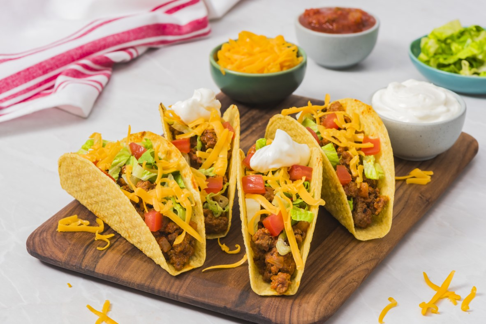

Tacos

Description
Tacos are a typical mexican dish that is well liked in America. Countless restaurants serve tacos. Tacos are usually composed of corn tortillas containing cheese, meat and condiments.
Ingredients
- Corn tortillas
- Minced beef
- Onions
- Garlic
- Mexican spices
- Lettuce
- Tomatoes
- Cheese
- Avocados
Steps
- Finely chop the onions and the garlic
- Brown the onions and the garlic and add the meat
- When cooked remove the fat
- Chop the lettuce, the tomatoes and the avocados and grate the cheese
- Assemble in the corn tortillas